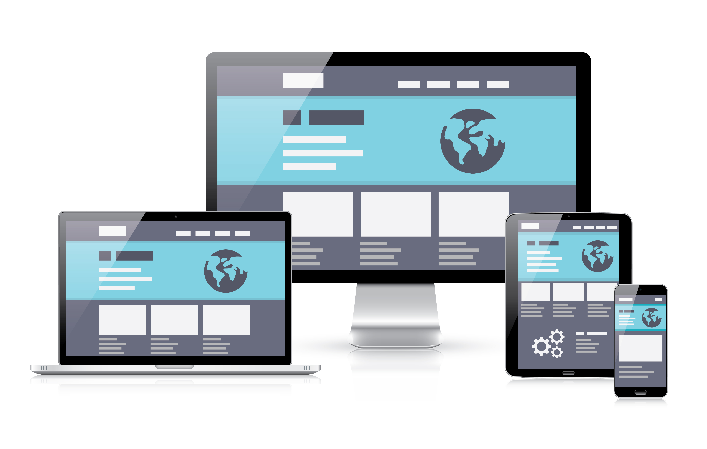

Принципы адаптивного дизайна

Проектирование начинается с адаптивной версии веб-сайта для мобильных устройств. На этом этапе дизайнеры стремятся правильно передать смысл и основные идеи с использованием небольшого экрана и всего одной колонки. Содержимое при необходимости сокращают, удаляя второстепенные информационные блоки и оставляя самое важное.
- Проектирование для мобильных устройств с самых ранних этапов («mobile first»).
- Применение гибкого макета на основе сетки («grid-based layout»).
- Использование гибких изображений («flexible images»).
- Работа с медиазапросами («media queries»).
Плюсы и минусы использования адаптивного дизайна

Плюсы
- Так как существует большое разнообразие устройств, с которых можно выходить в Интернет, важно что-бы у каждого пользователя web-сайт правильно отображался , независимо от того, какое устройство он использует.
- Популярность мобильных устройств с выходом в Интернет и увеличение мобильного Интернет-трафика.
- Снижение затрат на разработку сайта под разные устройства.
- Зачастую адаптивный дизайн приводит к неоправданному увеличению времени загрузки сайта на мобильных устройствах.
- Пользователи не смогут посмотреть полную версию.
- Высокие расходы на применение использования адаптивного дизайна уже к существующему сйту.